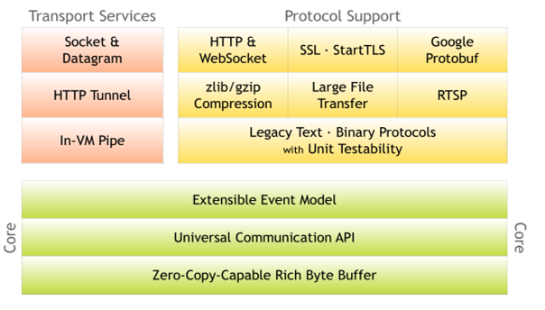

netty到nio简单介绍！
原生NIO的问题
NIO 的类库和 API 繁杂，使用麻烦：需要熟练掌握 Selector、ServerSocketChannel、SocketChannel、ByteBuffer 等。
需要具备其他的额外技能：要熟悉 Java 多线程编程，因为 NIO 编程涉及到 Reactor 模式，你必须对多线程和网络编程非常熟悉，才能编写出高质量的 NIO 程序。
开发工作量和难度都非常大：例如客户端面临断连重连、网络闪断、半包读写、失败缓存、网络拥塞和异常流的处理等等。
JDK NIO 的 Bug：例如臭名昭著的 Epoll Bug，它会导致 Selector 空轮询，最终导致 CPU 100%。直到 JDK 1.7 版本该问题仍旧存在，没有被根本解决。
netty概述
Netty is an asynchronous event-driven network application framework for rapid development of maintainable high performance protocol servers & clients

Netty 是由 JBOSS 提供的一个 Java 开源框架。Netty 提供异步的、基于事件驱动的网络应用程序框架，用以快速开发高性能、高可靠性的网络 IO 程序
Netty 可以帮助你快速、简单的开发出一个网络应用，相当于简化和流程化了 NIO 的开发过程
Netty 是目前最流行的 NIO 框架，Netty 在互联网领域、大数据分布式计算领域、游戏行业、通信行业等获得了广泛的应用，知名的 Elasticsearch 、Dubbo 框架内部都采用了 Netty。
netty的优点
设计优雅：适用于各种传输类型的统一 API 阻塞和非阻塞 Socket；基于灵活且可扩展的事件模型，可以清晰地分离关注点；高度可定制的线程模型 - 单线程，一个或多个线程池.
使用方便：详细记录的 Javadoc，用户指南和示例；没有其他依赖项，JDK 5（Netty 3.x）或 6（Netty 4.x）就足够了。
高性能、吞吐量更高：延迟更低；减少资源消耗；最小化不必要的内存复制。
安全：完整的 SSL/TLS 和 StartTLS 支持。
社区活跃、不断更新：社区活跃，版本迭代周期短，发现的 Bug 可以被及时修复，同时，更多的新功能会被加入
版本说明
1)netty版本分为 netty3.x 和 netty4.x、netty5.x
2)因为Netty5出现重大bug，已经被官网废弃了，目前推荐使用的是Netty4.x的稳定版本
3)目前在官网可下载的版本 netty3.x netty4.0.x 和 netty4.1.x
4)在本套课程中，我们讲解 Netty4.1.x 版本
netty 下载地址： https://bintray.com/netty/downloads/netty/